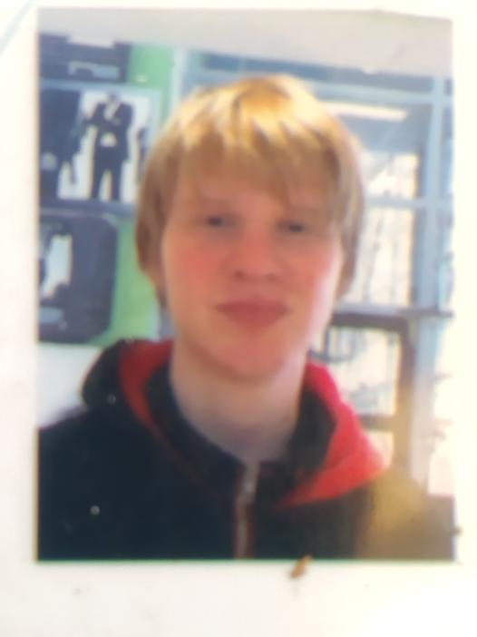

Ik ben kevin, ik ben 17 jaar Kom uit Giessenburg, geboren in Gorinchem. 
Ik heb voor deze opleiding gekozen omdat ik iets wou gaan doen met ict. Ik heb twee meeloopdagen gehad, en de meeloopdag van deze opleiding beviel mij zo goed dat ik dacht "dit is de opleiding voor mij".
at ik vooral doe na de lessen is mijn sociale relaties tussen mij en mijn klasgenoten opbouwen. Iets anders dat ik doe is mijn medeleerlingen helpen met hun schoolwerk, zowel thuis als op school.
Aangezien ik op deze opleiding zit om dingen te leren heb ik ook wat ontwikkelpunten. Mijn belangrijkste Ontwikkelpunt is, dat ik mijn geduld meer moet bewaren. Een ander punt is dat ik meer serieus moet zijn in plaats
van kloten tijdens de les.
Wat ik op de basisschool heb geleerd is gewoon basiskennis. Wat ik op de havo heb geleerd is een deel doorzettingsvermogen en een deel zelfstanding kunnen werken.